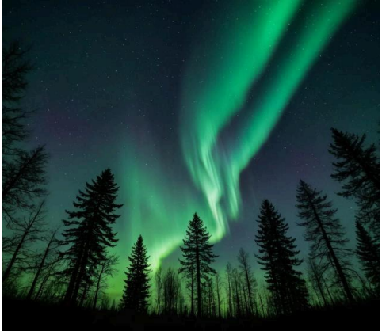
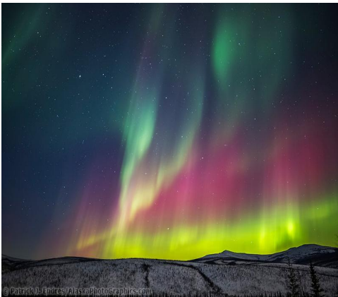

This phenomenon is caused by the interaction of electrically charged particles (electrons and protons) emitted by the sun, known as the solar wind, with gases in the Earth's upper atmosphere (ionosphere). The Earth's magnetic field directs these particles toward the poles, and when they collide with oxygen and nitrogen atoms, these atoms are excited and release energy in the form of photons of light of different colors.


The color shown depends on the type of gas and the height of the collision:
1-Green: It is the most common color and is produced by oxygen at altitudes between 100 and 240 kilometers approximately.
2-Red: Less common and appears at higher altitudes (above 240 km) when reacting with oxygen.
3-Blue and violet: Caused by a reaction with nitrogen, it often appears at the lower edges of twilight and during strong solar storms.
The aurora takes various forms such as:
1-arches
2-curtains
3-rays
4-diffuse spots
It is best seen in areas such as,especially during the winter months from September to March, and away from the light pollution of cities.
1-Alaska
2-Canada
3-northern Norway
4-Finland
5-Iceland